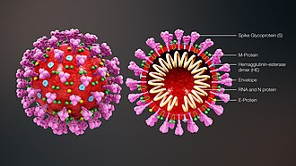

Corona Virus
Coronaviruses are a group of related RNA viruses that cause diseases in mammals and birds. In humans and birds, they cause respiratory tract infections that can range from mild to lethal. Mild illnesses in humans include some cases of the common cold (which is also caused by other viruses, predominantly rhinoviruses), while more lethal varieties can cause SARS, MERS, and COVID-19. In cows and pigs they cause diarrhea, while in mice they cause hepatitis and encephalomyelitis. There are as yet no vaccines or antiviral drugs to prevent or treat human coronavirus infections.
 Transmission electron micrograph of Avian coronavirus
Transmission electron micrograph of Avian coronavirus
Coronaviruses constitute the subfamily Orthocoronavirinae, in the family Coronaviridae, order Nidovirales, and realm Riboviria. They are enveloped viruses with a positive-sense single-stranded RNA genome and a nucleocapsid of helical symmetry. The genome size of coronaviruses ranges from approximately 26 to 32 kilobases, one of the largest among RNA viruses.They have characteristic club-shaped spikes that project from their surface, which in electron micrographs create an image reminiscent of the solar corona, from which their name derives.
Etymology
The name "coronavirus" is derived from Latin corona, meaning "crown" or "wreath", itself a borrowing from Greek κορώνη korṓnē, "garland, wreath". The name was coined by June Almeida and David Tyrrell who first observed and studied human coronaviruses. The word was first used in print in 1968 by an informal group of virologists in the journal Nature to designate the new family of viruses. The name refers to the characteristic appearance of virions (the infective form of the virus) by electron microscopy, which have a fringe of large, bulbous surface projections creating an image reminiscent of the solar corona or halo. This morphology is created by the viral spike peplomers, which are proteins on the surface of the virus.
History
The earliest reports of an illness caused by a coronavirus occurred in the late 1920s, when an acute respiratory infection of domesticated chickens emerged in North America. Arthur Schalk and M.C. Hawn in 1931 made the first detailed report which described a new respiratory infection of chickens in North Dakota. The infection of new-born chicks was characterized by gasping and listlessness with high mortality rates of 40–90%.Leland David Bushnell and Carl Alfred Brandly isolated the virus in 1933. The virus was then known as infectious bronchitis virus (IBV). Charles D. Hudson and Fred Robert Beaudette cultivated the virus for the first time in 1937. The specimen came to be known as the Beaudette strain. In the late 1940s, two more animal coronaviruses, JHM that causes brain disease (murine encephalitis) and mouse hepatitis virus (MHV) that causes hepatitis in mice were discovered. It was not realized at the time that these three different viruses were related.

Human coronaviruses were discovered in the 1960s using two different methods in the United Kingdom and the United States.[24] E.C. Kendall, Malcolm Bynoe, and David Tyrrell working at the Common Cold Unit of the British Medical Research Council collected a unique common cold virus designated B814 in 1961. The virus could not be cultivated using standard techniques which had successfully cultivated rhinoviruses, adenoviruses and other known common cold viruses. In 1965, Tyrrell and Bynoe successfully cultivated the novel virus by serially passing it through organ culture of human embryonic trachea. The new cultivating method was introduced to the lab by Bertil Hoorn.The isolated virus when intranasally inoculated into volunteers caused a cold and was inactivated by ether which indicated it had a lipid envelope. Dorothy Hamre and John Procknow at the University of Chicago isolated a novel cold from medical students in 1962. They isolated and grew the virus in kidney tissue culture, assigning it as 229E. The novel virus caused a cold in volunteers and was inactivated by ether similarly as B814.
Structure
Coronaviruses are large, roughly spherical particles with bulbous surface projections. The average diameter of the virus particles is around 125 nm (.125 μm). The diameter of the envelope is 85 nm and the spikes are 20 nm long. The envelope of the virus in electron micrographs appears as a distinct pair of electron-dense shells (shells that are relatively opaque to the electron beam used to scan the virus particle).

The viral envelope consists of a lipid bilayer, in which the membrane (M), envelope (E) and spike (S) structural proteins are anchored. The ratio of E:S:M in the lipid bilayer is approximately 1:20:300. On average a coronavirus particle has 74 surface spikes. A subset of coronaviruses (specifically the members of betacoronavirus subgroup A) also have a shorter spike-like surface protein called hemagglutinin esterase (HE).
Inside the envelope, there is the nucleocapsid, which is formed from multiple copies of the nucleocapsid (N) protein, which are bound to the positive-sense single-stranded RNA genome in a continuous beads-on-a-string type conformation. The lipid bilayer envelope, membrane proteins, and nucleocapsid protect the virus when it is outside the host cell.